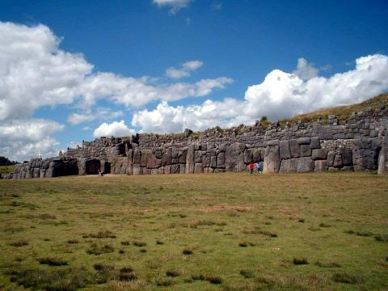

Travel South: Fotos und Geschichten
Travel South sind Jani Korpis Reisen mit der Kamera. 2011 fotografierte er Peru und Bolivien in der Reihenfolge der Reise, von der Küste bei Nazca bis zum Salz von Uyuni: Wüste, Schilfinseln, die Mauern von Sacsayhuamán oberhalb von Cusco und die Steine von Tiwanaku und Puma Punku.
2014 fotografierte er in Peru Schädel und filmte am 1. November 2014 in einem Museum. Ein Foto von diesem Besuch zeigt ihn mit dem Schädel, den die Sammlung Starchild 2 nennt. Der Name ist von einem anderen Schädel in Mexiko entlehnt, den Lloyd Pye bekannt machte; die Galerie hält die beiden auseinander. Im untersuchten Paracas-Material wird ein langer Kopf als Formung in der Kindheit gelesen, nicht als Folge der DNA.
Am 15. Februar 2024 fotografierte er Steinköpfe im Ägyptischen Museum in Kairo. Ihr Profil kann an die Langschädel Perus erinnern, aber die Ähnlichkeit ist nur visuell: die Kairoer Köpfe sind Skulpturen, die peruanischen Schädel sind Knochen.

„Ich bin um die ganze Welt gereist, und hier halte ich den Starchild-2-Schädel in meinen Händen.“
Fotogeschichten
 Was erzählen die Schädel?Ein Foto aus Peru 2014 zeigt den Schädel namens Starchild 2 — der Name ist von einem anderen Schädel in Mexiko entlehnt. Die Seite behandelt auch Paracas-Schädel, Ausstellungstexte und veröffentlichte Forschung.
Was erzählen die Schädel?Ein Foto aus Peru 2014 zeigt den Schädel namens Starchild 2 — der Name ist von einem anderen Schädel in Mexiko entlehnt. Die Seite behandelt auch Paracas-Schädel, Ausstellungstexte und veröffentlichte Forschung. Wer lehrte wen?Eine Fotogeschichte in zehn Kapiteln, von Puma Punku nach Cusco. Die Chroniken widersprechen sich, und die Radiokarbon-Datierung setzt den Bau von Puma Punku auf etwa 580–710 n. Chr.
Wer lehrte wen?Eine Fotogeschichte in zehn Kapiteln, von Puma Punku nach Cusco. Die Chroniken widersprechen sich, und die Radiokarbon-Datierung setzt den Bau von Puma Punku auf etwa 580–710 n. Chr. SacsayhuamánDrei Zickzackmauern steigen den Hang oberhalb von Cusco hinauf, die Steine ohne Mörtel gefügt. Fotos der Reise von 2011.
SacsayhuamánDrei Zickzackmauern steigen den Hang oberhalb von Cusco hinauf, die Steine ohne Mörtel gefügt. Fotos der Reise von 2011. Tiwanaku und Puma PunkuWelcher Teil dieser Ecke ist eine Werkzeugspur, und welcher eine Deutung? Wie wurden die H-Steine von Puma Punku gebaut, und wie alt ist die Anlage?
Tiwanaku und Puma PunkuWelcher Teil dieser Ecke ist eine Werkzeugspur, und welcher eine Deutung? Wie wurden die H-Steine von Puma Punku gebaut, und wie alt ist die Anlage? Cusco: Hatun RumiyocDer zwölfeckige Stein in der Hatun-Rumiyoc-Straße gehörte zur Mauer von Inca Rocas Palast.
Cusco: Hatun RumiyocDer zwölfeckige Stein in der Hatun-Rumiyoc-Straße gehörte zur Mauer von Inca Rocas Palast. Gesichter der SteinstadtKI-Illustration · Fiktion. 13 Bildpaare: Janis Foto und eine KI-Illustration. Die Steinstadt und ihre Bewohner sind erfunden.
Gesichter der SteinstadtKI-Illustration · Fiktion. 13 Bildpaare: Janis Foto und eine KI-Illustration. Die Steinstadt und ihre Bewohner sind erfunden.

15 Orte durchstöbernIn der Reihenfolge der Reise, von Nazca nach Uyuni, mit Fotos, einer kurzen Geschichte und Videos.Die Galerie in allen Sprachen
Öffne die ganze Galerie mit 15 Orten in deiner Sprache.